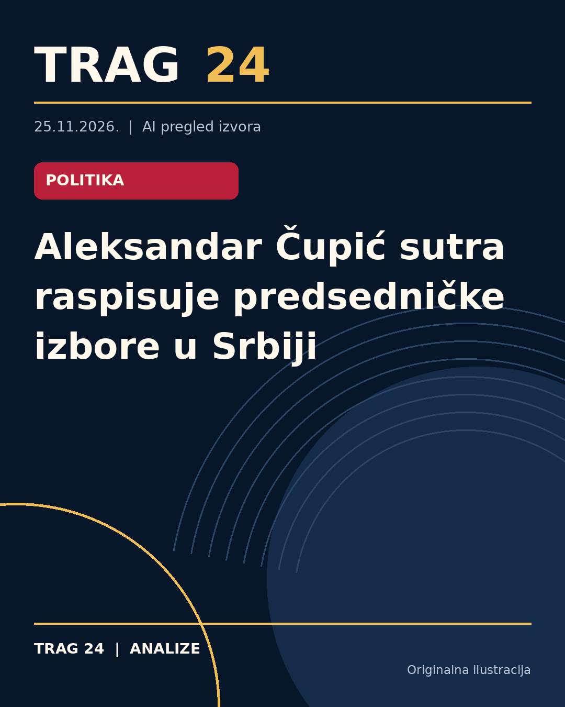

Aleksandar Čupić sutra raspisuje predsedničke izbore u Srbiji

ŠTA SE DOGODILO
Aleksandar Čupić, kao predsednik Skupštine Srbije, sutra će u 12 sati raspisati izbore za predsednika Srbije. Ovo je zvanični početak izborne kampanje za izbor na mesto predsednika države.
HRONOLOGIJA
Mandat prethodnog predsednika Aleksandra Vučića je prestao 27. septembra kada je podneo ostavku. Zakonski rok nalaže da se novi izbori moraju održati u roku od tri meseca od prestanka mandata, odnosno do 27. decembra. Po raspisivanju izbora, između datuma raspisivanja i dana glasanja mora proteći najmanje 30 a najviše 60 dana, što ukazuje da je najkasniji mogući datum održavanja izbora nedelja, 27. decembar.
ŠTA NAVODE IZVORI
Prema informacijama iz Doma Skupštine Srbije i parlamentarne najave, Čupić će zvanično potpisati odluku o raspisivanju izbora u centralnom holu Doma Skupštine. Izvor iz Danasa navodi da nije preciziran tačan datum glasanja, ali zakonski rok jasno određuje termin do 27. decembra. Takođe, prethodni predsednik Vučić podneo je ostavku pre isteka mandata kako bi se kandidovao za parlamentarne izbore. Političke stranke, koalicije i grupe građana mogu predlagati kandidate uz potrebnih najmanje 10.000 overenih potpisa.
ŠTA JE POTVRĐENO
Potvrđeno je da će Aleksandar Čupić kao predsednik Skupštine Srbije raspisati predsedničke izbore. Takođe je potvrđeno da glasanje mora biti održano najkasnije do 27. decembra, odnosno u roku od tri meseca od prestanka mandata predsednika Vučića. Postoji zakonska procedura u kojoj Republička izborna komisija objavljuje spisak kandidata i određuje redosled kandidata žrebom. Ukoliko nijedan kandidat ne osvoji više od polovine glasova u prvom krugu, sledi drugi krug u roku od 15 dana.
ŠTA NIJE POTVRĐENO
Nije precizirano kada će tačno biti održani izbori, osim što je potvrđeno da datum ne može biti kasniji od 27. decembra. Nema potvrde o kandidaturama niti o potencijalnim kandidatima za predsednika Srbije. Takođe, detalji o dinamici kampanje i eventualnim promenama u proceduri nisu zvanično objavljeni do ovog trenutka.
ŠTA OSTАJE OTVORENO: Ostaje nepoznato koji će kandidati biti zvanično prijavljeni za izbore i da li će doći do drugog kruga glasanja. Takođe nije poznato hoće li novi predsednik stupiti na dužnost odmah nakon polaganja zakletve pred Skupštinom Srbije i kako će se odvijati celokupni izborni proces u narednom periodu.
Izvori
- https://www.klix.ba/vijesti/regija/cupic-sutra-raspisuje-izbore-za-predsjednika-srbije-glasanje-najkasnije-do-27-decembra/261125178
- https://www.danas.rs/vesti/politika/cupic-raspisuje-predsednicke-izbore/
Ova analiza je pripremljena uz pomoć veštačke inteligencije na osnovu javno dostupnih izvora. Navodi izvora nisu nužno nezavisno potvrđeni.